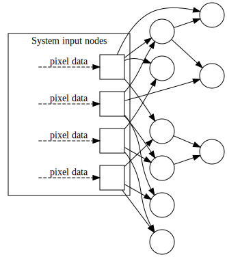
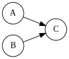
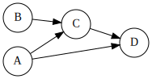

A proposed basis for the design of engineerable intelligent systems
The system is made up of indicators. They are nodes in a directed acyclic graph (DAG) and each node holds a binary state. At a given time, an indicator is either active or inactive.
There are two kinds of activators which differ in how they are activated:
Input modules can be varied in nature. They are the software interface between physical sensors and the system. For example, a video camera that delivers black and white images would send data to a video module consisting of one input node per pixel. Each white pixel would activate the corresponding input node, while the same pixel being black would leave the node inactive.

Regular nodes are built from exactly two other nodes, which can be regular nodes or input nodes. For example, if a node \(A\) indicates “the system is moving” and a node \(B\) indicates “the presence of a forest trail”, then a node \(C = (A, B)\) would represent the concept that “the system is hiking”.

The whole system has its own internal clock that defines discrete cycles. Each cycle or “tick” is a computational step during which information propagates within the system.
At each cycle, information propagates from one node to the next:
Given a node \(C = (A, B)\), the activation of \(C\) comes always one tick behind the activation of \(A\) and \(B\). A node \(D = (A, C)\) can also be denoted \((A, (A, B))\) which means that \(A\) and \(B\) must be active simultaneously, then \(A\) must be active again at the next tick, and \(D\) will be active the tick after that.

Some active nodes can trigger actions of their choosing. An action consists in activating one of the action nodes provided by the IO modules. This is analogous to pressing and releasing a button.
The following processes are left unspecified in this document:
Initially, the system is created with at least some input nodes. Regular nodes, as well as new input nodes, are created as time passes and as the system interacts with its environment.
The following processes are left unspecified in this document:
The conjunction of two concepts is defined as two indicators active at the same time. It is detected one tick later.
In our context, abstraction is defined as activating one indicator when at least one of several indicators is active.
The system does not provide such an “OR” construct directly like it provides an “AND” construct in the form of nodes activated by the conjunction of two active nodes.
Solutions for abstraction must involve actions, possibly via modules that connect actions directly to input nodes without interacting with the outside world.